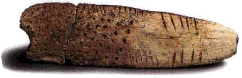
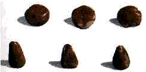
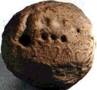
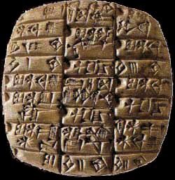
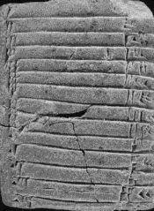
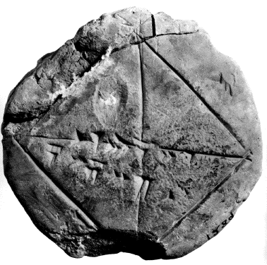

A) Histoire et utilité des nombres
|
Les nombres sont apparus il
y a très longtemps, aux environs de 30 000 av J.-C., durant les
premières civilisations du Paléolithique. L'homme avant
était incapable de compter : il était tout au plus capable
de concevoir l'unité et la multitude.
 De nombreux os (surtout des
radius) d'animaux, munis de plusieurs encoches ont été découverts
en Europe, datant de 20 000 à 35 000 ans ; ils constituent les
plus anciennes « machines à compter ».
Ils avaient ainsi inventé les premiers rudiments des systèmes de numération ; de multiples encoches, retrouvés sur les parois d'une caverne préhistorique à côté de dessins d'animaux ne laissent aucun doute sur la fonction de comptabilité de ces crans.  Un autre moyen de dénombrement
est encore plus ancien : la main . Rien d'étonnant puisque tous
les peuples de la terre y ont eu recours à un moment ou à
un autre de leur histoire.
Cette méthode a été à l'origine de la première numération écrite de l'histoire. En effet vers le 4e millénaire avant J.-C., quelques comptables de l'époque eurent l'idée de remplacer les cailloux ordinaires par des objets de diverses tailles avec des formes conventionnelles : un bâtonnet pour l'unité, une bille plate pour les dizaines, une petite boule pour les centaines, etc... Cela se passait en Elam (Terre iranienne près du golfe persique). Les Sumériens firent de même à peu près à la même époque, cependant comme leurs nombres étaient à base sexagésimale, les représentations changèrent : ce fut un petit cône pour 1, une bille pour 10, un grand cône pour 60, un grand cône perforé pour 600, une sphère pour 3600, etc... Les civilisations à cette époque étaient surtout orales, mais ce système fut très utile : il permit d' effectuer des opérations arithmétiques.  Et puis un jour, l'homme eut l'idée de symboliser sur l'argile les nombres : un petit trou circulaire pour la bille, une encoche pour un cône, un cercle pour une sphère... et c'est ainsi que, vers 3600 av J.-C. , naquirent les chiffres.
 Dans toutes les civilisations, aussi éloignées qu'elles soient, la découverte (ou plutôt l'invention) a été pratiquement simultanée et la méthode a été la même. Les chercheurs n'ont pas été surpris d'observer que certaines unités numériques ont été représentées partout au moyen du même signe, comme le nombre « un », qui est quasiment toujours représenté par un trait vertical, le « cinq » est lui souvent représenté par un V diversement orienté, le nombre « dix » par une sorte de X, etc ...
 Après cela, les Grecs, les Juifs, les Chrétiens, Les Arabes et bien d'autres peuples ont écrit les nombres au moyen des lettres de leur alphabet. Le système a consisté à attribuer aux lettres des valeurs numériques de 1 à 9, puis, par dizaines, de 10 à 90, et ensuite par centaines, et ainsi de suite. Les numérations procédèrent donc par addition des valeurs des lettres.

|